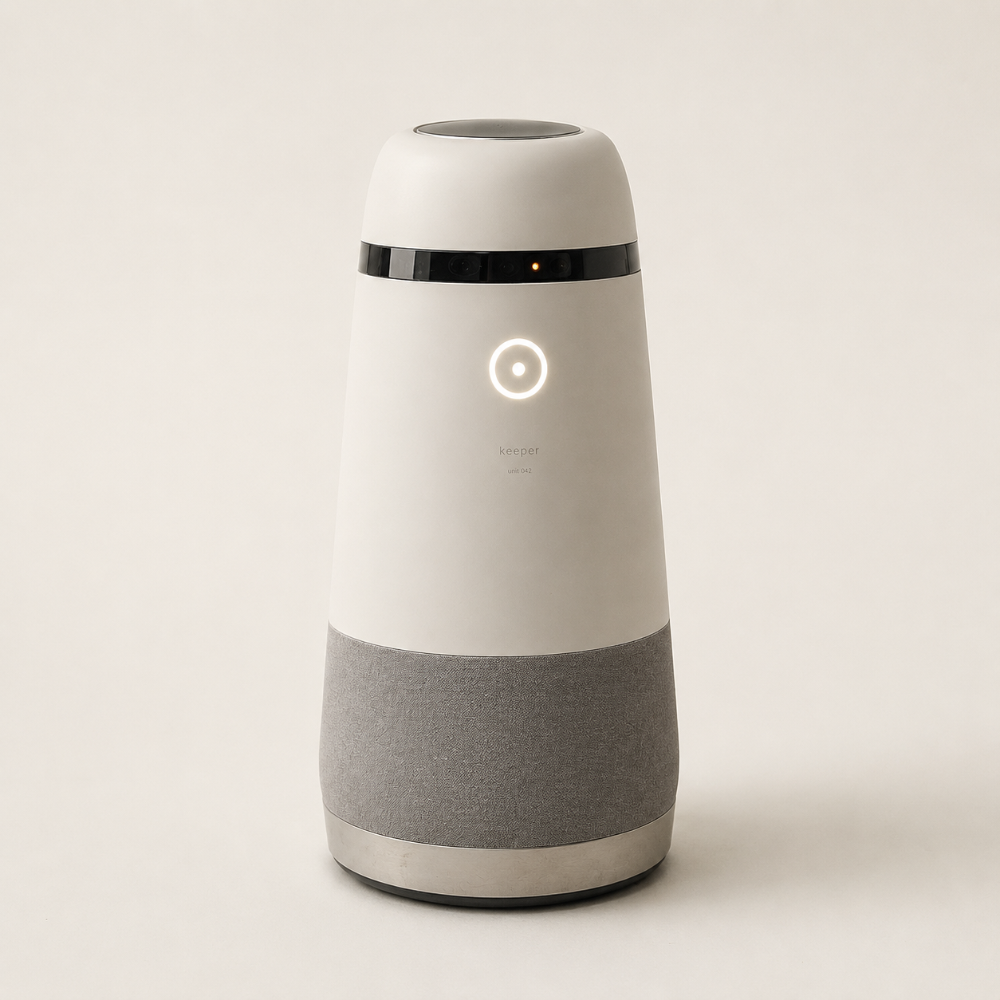

Autonomous patrol robots for parking lots and industrial sites. Real service, real revenue — every minute of work verified on-chain.
Static cameras record crime. Guards sleep, quit, and cost a fortune. We build tireless machines that patrol through the night — and prove every minute of their work on-chain.

One K-1 replaces a static guard post: it patrols, detects, deters — and calls humans only when it matters.
| height | 1.45 m | chest-height |
| sensors | 360° lidar · thermal · 4k | 30 m range |
| detection | < 300 ms, on-device | no cloud |
| deterrence | 110 db siren · two-way audio | escalation |
| endurance | 14 h, self-charging | docks alone |
| build | ip65 all-weather chassis | 6 km/h |
Every marker is a keeper unit on active patrol. Precise sites are confidential — select one for its live, redacted status.
Walk the site once. The unit builds its route and repeats it every night, indefinitely, without a shift change.
A person where none should be. The unit logs it, timestamps it, hashes it — a record no one can quietly edit.
Each patrol is signed by the robot's own key and batched to the chain. Operators are paid only for work that provably happened.
$KPR is the network's working capital — not a promise, a utility.
Operators stake it to register robots on the network; provable fraud gets slashed. Sites can pay with it at a 20% discount, with a share of every payment burned. Rewards follow work: emissions to operators are gated by proof-of-patrol — verified hours, uptime and incidents, nothing else.
No revenue-sharing, no dividends, no yield promises. The token coordinates a fleet; the fleet does the earning in the real world.
read the full token design →illustrative design — final structure subject to legal review. may qualify as a security in some jurisdictions.
* illustrative pilot targets, controlled r&d estimates — not audited results.
It runs continuous patrol loops on parking lots and industrial perimeters, detects intrusions with lidar, thermal and 4k vision, deters with voice and siren, and escalates real incidents to a human operator. Sites pay a monthly subscription per robot.
Each robot signs every event with its own onboard key. Critical incidents are anchored individually in near real time; routine telemetry is batched as merkle roots. Anyone can independently verify that a patrol actually happened.
A permissionless Ethereum L2 purpose-built for real-world assets, with chainlink data feeds and fast, cheap settlement — a natural home for tokenized physical infrastructure.
A token tied to real-world service revenue may be treated as a security in many jurisdictions. Structure and distribution will be finalized with legal counsel before any launch. This page is a concept preview, not an offer.
Robots process video on-device; only incident clips are stored, with retention set per site and per local regulation. On-chain proofs contain hashes and metrics — never raw footage.
Join the waitlist for the fleet pilot and the $KPR genesis — site operators and early supporters first.